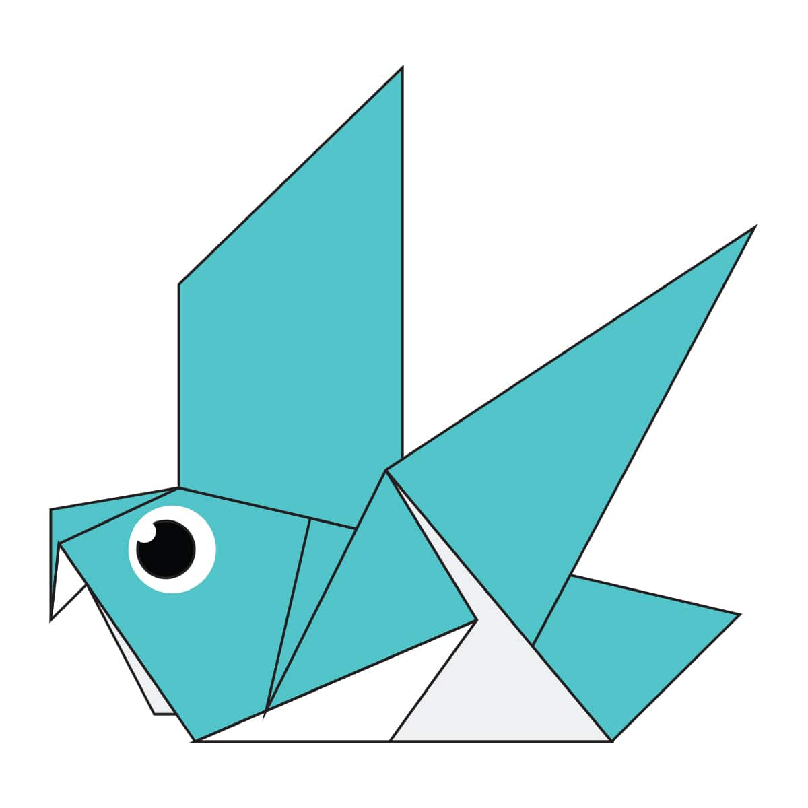

Origami Designs
About Me
Follow Us
Fun Facts About Camels(click on the picture to go the website)
- Camels have very broad feet.
- Camels have furry ears.
- They store water in their bodies for later use.

Fun Facts About Chameleons(click on the picture to go the website)
- Chameleons can change their skin colour.
- Chameleons are a part of the Iguana Suborder.
- Their tail can wrap around tree branches.

Fun Facts About Pigeons(click on the picture to go the website)
- Pigeons have amazing navigation ability.
- Pigeons are highly sociable animals.
- They mate for life.
Fun Facts About Teddy bears(click on the picture to go the website)
- The teddy was named after President Theodore Roosevelt, after he refused to shoot a bear during a 1902 hunting trip.
- A teddy bear has been to space.
- The largest collection of teddy bears auctiones includes 1300 bears.
Fun Facts About Pandas(click on the picture to go the website)
- Pandas are good at climbing trees ad swimming.
- Pandas have a LARGE number have fans because of their adorable looks.
- They are very lazy. They eat and sleep all day.

Fun Facts About Flying Cicadas(click on the picture to go the website)
- Cicadas can survive a huge fall as babies.
- Most Cicadas have red-orange eyes.
- Some Females get attracted to the sound of motors.